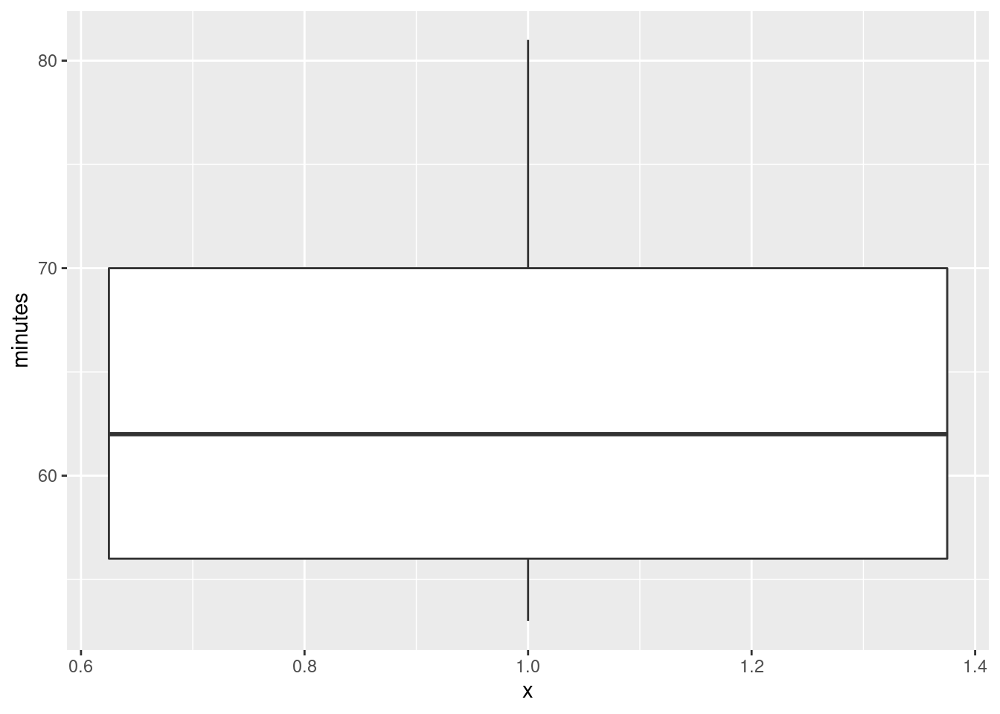

Chapter 5 One-sample inference
## ── Attaching packages ────────────────────────────────── tidyverse 1.2.1 ──## ✔ ggplot2 3.1.0 ✔ purrr 0.2.5
## ✔ tibble 1.4.2 ✔ dplyr 0.7.8
## ✔ tidyr 0.8.1 ✔ stringr 1.3.1
## ✔ readr 1.1.1 ✔ forcats 0.3.0## ── Conflicts ───────────────────────────────────── tidyverse_conflicts() ──
## ✖ dplyr::filter() masks stats::filter()
## ✖ dplyr::lag() masks stats::lag()5.1 Hunter-gatherers in Australia
A hunter-gatherer society is one where people get their food by hunting, fishing or foraging rather than by agriculture or by raising animals. Such societies tend to move from place to place. Anthropologists have studied hunter-gatherer societies in forest ecosystems across the world. The average population density of these societies is 7.38 people per 100 km\(^2\). Hunter-gatherer societies on different continents might have different population densities, possibly because of large-scale ecological constraints (such as resource availability), or because of other factors, possibly social and/or historic, determining population density.
Some hunter-gatherer societies in Australia were studied, and the population density per 100 km\(^2\) recorded for each. The data are in http://www.utsc.utoronto.ca/~butler/c32/hg.txt.
- Read the data into R. Do you have the correct variables? How many hunter-gatherer societies in Australia were studied? Explain briefly.
Solution
The data values are separated by (single) spaces, so read_delim
is the thing:
## Parsed with column specification:
## cols(
## name = col_character(),
## density = col_double()
## )I like to put the URL in a variable first, because if I don’t, the
read_delim line can be rather long. But if you want to do it
in one step, that’s fine, as long as it’s clear that you are doing the
right thing.
Let’s look at the data frame:
## # A tibble: 13 x 2
## name density
## <chr> <dbl>
## 1 jeidji 17
## 2 kuku 50
## 3 mamu 45
## 4 ngatjan 59.8
## 5 undanbi 21.7
## 6 jinibarra 16
## 7 ualaria 9
## 8 barkindji 15.4
## 9 wongaibon 5.12
## 10 jaralde 40
## 11 tjapwurong 35
## 12 tasmanians 13.4
## 13 badjalang 13.4I have the name of each society and its population density, as promised (so that is correct). There were 13 societies that were studied. For me, they were all displayed. For you, you’ll probably see only the first ten, and you’ll have to click Next to see the last three.
- The question of interest is whether these Australian hunter-gatherer societies are like the rest of the world in terms of mean population density. State suitable null and alternative hypotheses. Define any symbols you use: that is, if you use a symbol, you also have to say what it means.
Solution
The mean for the world as a whole (“average”, as stated earlier) is 7.38. Let \(\mu\) denote the population mean for Australia (of which these societies are a sample). Then our hypotheses are: \[ H_0: \mu=7.38\] and \[ H_a: \mu \ne 7.38.\] There is no reason for a one-sided alternative here, since all we are interested in is whether Australia is different from the rest of the world. Expect to lose a point if you use the symbol \(\mu\) without saying what it means.
- Test your hypotheses using a suitable test. What do you conclude, in the context of the data?
Solution
A \(t\)-test, since we are testing a mean:
##
## One Sample t-test
##
## data: societies$density
## t = 3.8627, df = 12, p-value = 0.002257
## alternative hypothesis: true mean is not equal to 7.38
## 95 percent confidence interval:
## 15.59244 36.84449
## sample estimates:
## mean of x
## 26.21846The P-value is 0.0023, less than the usual \(\alpha\) of 0.05, so we reject the null hypothesis and conclude that the mean population density is not equal to 7.38. That is to say, Australia is different from the rest of the world in this sense.
As you know, “reject the null hypothesis” is only part of the answer, so gets only part of the marks.
- Do you have any doubts about the validity of your test? Explain briefly, using a suitable graph to support your explanation.
Solution
The assumption behind the \(t\)-test is that the data are approximately normal. We can assess that in several ways, but the simplest (which is perfectly acceptable at this point) is a histogram. You’ll need to pick a suitable number of bins. This one comes from Sturges’ rule:
 Your conclusion might depend on how many bins you chose for your
histogram. Here’s 8 bins (which is really too many with only 13
observations, but it actually shows the shape well):
Your conclusion might depend on how many bins you chose for your
histogram. Here’s 8 bins (which is really too many with only 13
observations, but it actually shows the shape well):

or you can get a number of bins from one of the built-in functions, such as:
## [1] 3This one is small. The interquartile range is large and \(n\) is small, so the binwidth will be large and therefore the number of bins will be small.
Other choices: a one-group boxplot:

This isn’t the best for assessing normality as such, but it will tell you about lack of symmetry and outliers, which are the most important threats to the \(t\)-test, so it’s fine here. Or, a normal quantile plot:

This is actually the best way to assess normality, but I’m not expecting you to use this plot here, because we may not have gotten to it in class yet. (If you have read ahead and successfully use the plot, it’s fine.)
After you have drawn your chosen plot (you need one plot), you need to say something about normality and thus whether you have any doubts about the validity of your \(t\)-test. This will depend on the graph you drew: if you think your graph is symmetric and outlier-free, you should have no doubts about your \(t\)-test; if you think it has something wrong with it, you should say what it is and express your doubts. My guess is that you will think this distribution is skewed to the right. Most of my plots are saying that. The normal quantile plot is rather interesting: it says that the uppermost values are approximately normal, but the smallest eight or so values are too bunched up to be normal. That is, normality fails not because of the long tail on the right, but the bunching on the left. Still right-skewed, though.
On the website where I got these data, they were using the data as an example for another test, precisely because they thought the distribution was right-skewed. Later on, we’ll learn about the sign test for the median, which I think is actually a better test here.
5.2 Buses to Boulder
A bus line operates a route from Denver to Boulder (these places are in Colorado). The schedule says that the journey time should be 60 minutes. 11 randomly chosen journey times were recorded, and these are in the file link, with journey times shown in minutes.
- Read the data into R, and display the data frame that you read in.
Solution
Since you can read the data directly from the URL, do that (if
you are online) rather than having to copy and paste and save,
and then find the file you saved.
Also, there is only one column, so you can pretend that there
were multiple columns, separated by whatever you like. It’s least
typing to pretend that they were separated by commas like a
.csv file:
## Parsed with column specification:
## cols(
## minutes = col_integer()
## )## # A tibble: 11 x 1
## minutes
## <int>
## 1 58
## 2 61
## 3 69
## 4 62
## 5 81
## 6 54
## 7 72
## 8 71
## 9 53
## 10 54
## 11 66Using read_delim with any delimiter (such as " ")
will also work, and is thus also good.
Variable names in R can have a dot (or an underscore, but not a space) in them. I have grown accustomed to using dots to separate words. This works in R but not other languages, but is seen by some as old-fashioned, with underscores being the modern way. In some languages, a dot is used to concatenate bits of text, or as a way of calling a method on an object. But in R, a dot has no special meaning, and is used in function names like t.test. Or read.table. You can also use what is called “camel case” by starting each “word” after the first with an uppercase letter like this:
You have to get the capitalization and punctuation right when you use your variables,
no matter what they’re called. In any of the cases above, there is no
variable called journeytimes. As Jenny Bryan (in
link)
puts it, boldface in original:
Implicit contract with the computer / scripting language: Computer
will do tedious computation for you. In return, you will be
completely precise in your instructions. Typos matter. Case
matters. Get better at typing.
- Run a suitable test to see whether there is evidence that the mean journey time differs from 60 minutes. What do you conclude? (I want a conclusion that says something about journey times of buses.)
Solution
t.test doesn’t take a data= to say which
data frame to use. Wrap it in a with:
##
## One Sample t-test
##
## data: minutes
## t = 1.382, df = 10, p-value = 0.1971
## alternative hypothesis: true mean is not equal to 60
## 95 percent confidence interval:
## 57.71775 69.73680
## sample estimates:
## mean of x
## 63.72727We are testing that the mean journey time is 60 minutes, against the two-sided alternative (default) that the mean is not equal to 60 minutes. The P-value, 0.1971, is a lot bigger than the usual \(\alpha\) of 0.05, so we cannot reject the null hypothesis. That is, there is no evidence that the mean journey time differs from 60 minutes.
As you remember, we have not proved that the mean journey time is 60 minutes, which is what “accepting the null hypothesis” would be. We have only failed to reject it, in a shoulder-shrugging kind of way: “the mean journey time could be 60 minutes”. The other acceptable word is “retain”; when you say “we retain the null hypothesis”, you imply something like “we act as if the mean is 60 minutes, at least until we find something better.”
- Give a 95% confidence interval for the mean journey time. (No R code is needed here.)
Solution
Just read it off from the output: 57.72 to 69.74 minutes.
- Do you draw consistent conclusions from your test and confidence interval? Explain briefly.
Solution
The test said that we should not reject a mean of 60 minutes. The confidence interval says that 60 minutes is inside the interval of plausible values for the population mean, which is another way of saying the same thing. (If we had rejected 60 as a mean, 60 would have been outside the confidence interval.)
- Draw a boxplot of the journey times. Do you see a reason to doubt the test that you did above?
Solution
The grouping variable is a “nothing” as in the Ken and Thomas question (part (d)):

The assumption behind the \(t\)-test is that the population from which the data come has a normal distribution: ie. symmetric with no outliers. A small sample (here we have 11 values) even from a normal distribution might look quite non-normal (as in Assignment 0 from last week), so I am not hugely concerned by this boxplot. However, it’s perfectly all right to say that this distribution is skewed, and therefore we should doubt the \(t\)-test, because the upper whisker is longer than the lower one. In fact, the topmost value is very nearly an outlier: Whether you think it is or not may depend on how many bins you have on your histogram. With 5 bins it looks like an outlier, but with 6 it does not. Try it and see.

and there might be skewness as well, so maybe I should have been concerned.
I would be looking for some intelligent comment on the boxplot: what it looks like vs. what it ought to look like. I don’t so much mind what that comment is, as long as it’s intelligent enough.
Perhaps I should draw a normal quantile plot:

The normal quantile plot is saying that the problem is actually at the bottom of the distribution: the lowest value is not low enough, but the highest value is actually not too high. So this one seems to be on the edge between OK and being right-skewed (too bunched up at the bottom). My take is that with this small sample this is not too bad. But you are free to disagree.
If you don’t like the normality, you’d use a sign test and test that the median is not 60 minutes, which you would (at my guess) utterly fail to reject:
## $above_below
## below above
## 4 7
##
## $p_values
## alternative p_value
## 1 lower 0.8867187
## 2 upper 0.2744141
## 3 two-sided 0.5488281## [1] 54.00195 71.99023and so we do. The median could easily be 60 minutes.
5.3 Length of gestation in North Carolina
The data in file link are about 500 randomly chosen births of babies in North Carolina. There is a lot of information: not just the weight at birth of the baby, but whether the baby was born prematurely, the ages of the parents, whether the parents are married, how long (in weeks) the pregnancy lasted (this is called the “gestation”) and so on. We have seen these data before.
- Read in the data from the file into R, bearing in mind what type of file it is.
Solution
This is a .csv file (it came from a spreadsheet), so it
needs reading in accordingly. Work directly from the URL (rather
than downloading the file, unless you are working offline):
## Parsed with column specification:
## cols(
## `Father Age` = col_integer(),
## `Mother Age` = col_integer(),
## `Weeks Gestation` = col_integer(),
## `Pre-natal Visits` = col_integer(),
## `Marital Status` = col_integer(),
## `Mother Weight Gained` = col_integer(),
## `Low Birthweight?` = col_integer(),
## `Weight (pounds)` = col_double(),
## `Premie?` = col_integer(),
## `Few Visits?` = col_integer()
## )- Find a 95% confidence interval for the mean birth weight of all babies born in North Carolina (of which these babies are a sample). At the end, you should state what the confidence interval is. Giving some output is necessary, but not enough by itself.
If your variable name has a space or other special character (like a question mark) in it, remember that you have to surround its name with backticks, as discussed the first time we looked at these data.
Solution
This:
##
## One Sample t-test
##
## data: bw$`Weight (pounds)`
## t = 104.94, df = 499, p-value < 2.2e-16
## alternative hypothesis: true mean is not equal to 0
## 95 percent confidence interval:
## 6.936407 7.201093
## sample estimates:
## mean of x
## 7.06875or (the same, but remember to match your brackets):
##
## One Sample t-test
##
## data: Weight (pounds)
## t = 104.94, df = 499, p-value < 2.2e-16
## alternative hypothesis: true mean is not equal to 0
## 95 percent confidence interval:
## 6.936407 7.201093
## sample estimates:
## mean of x
## 7.06875The confidence interval goes from 6.94 to 7.20 pounds.
There is an annoyance about t.test. Sometimes you can use
data= with it, and sometimes not. When we do a two-sample
\(t\)-test later, there is a “model formula” with a squiggle in it,
and there we can use data=, but here not, so you have to use
the dollar sign or the with to say which data frame to get
things from. The distinction seems to be that , you can use data=, and if not, not.
This is one of those things that is a consequence of R’s history. The
original t.test was without the model formula and thus
without the data=, but the model formula got “retro-fitted”
to it later. Since the model formula comes from things like
regression, where data= is legit, that had to be retro-fitted
as well. Or, at least, that’s my understanding.
- Birth weights of babies born in the United States have a mean of 7.3 pounds. Is there any evidence that babies born in North Carolina are less heavy on average? State appropriate hypotheses, do your test, obtain a P-value and state your conclusion, in terms of the original data.
Solution
Let \(\mu\) be the population mean (the mean weight of all babies born in North Carolina). Null hypothesis is \(H_0: \mu=7.3\) pounds, and the alternative is that the mean is less: \(H_a: \mu<7.3\) pounds.
Note that I defined \(\mu\) first before I used it.
This is a one-sided
alternative, which we need to feed into t.test:
##
## One Sample t-test
##
## data: bw$`Weight (pounds)`
## t = -3.4331, df = 499, p-value = 0.0003232
## alternative hypothesis: true mean is less than 7.3
## 95 percent confidence interval:
## -Inf 7.179752
## sample estimates:
## mean of x
## 7.06875$ %$
Or with with. If you see what I mean.
The P-value is 0.0003, which is less than any \(\alpha\) we might have chosen: we reject the null hypothesis in favour of the alternative, and thus we conclude that the mean birth weight of babies in North Carolina is indeed less than 7.3 pounds.
“Reject the null hypothesis” is not a complete answer. You need to say something about what rejecting the null hypothesis means in this case: that is, you must make a statement about birth weights of babies.
- The theory behind the \(t\)-test says that the distribution of birth weights should be (approximately) normally distributed. Obtain a histogram of the birth weights. Does it look approximately normal? Comment briefly. (You’ll have to pick a number of bins for your histogram first. I don’t mind very much what you pick, as long as it’s not obviously too many or too few bins.)
Solution
We did this before (and discussed the number of bins before), so I’ll just reproduce my 10-bin histogram (which is what I preferred, but this is a matter of taste):

So, we were assessing normality. What about that?
It is mostly normal-looking, but I am suspicious about those very low birth weights, the ones below about 4 pounds. There are too many of those, as I see it.
If you think this is approximately normal, you need to make some comment along the lines of “the shape is approximately symmetric with no outliers”. I think my first answer is better, but this answer is worth something, since it is a not completely unreasonable interpretation of the histogram.
A normal quantile plot is better for assessing normality than a histogram is, but I won’t make you do one until we have seen the idea in class. Here’s the normal quantile plot for these data:

This is rather striking: the lowest birthweights (the ones below 5 pounds or so) are way too low for a normal distribution to apply. The top end is fine (except perhaps for that one very heavy baby), but there are too many low birthweights for a normal distribution to be believable. Note how much clearer this story is than on the histogram.
Having said that, the \(t\)-test, especially with a sample size as big as this (500), behaves very well when the data are somewhat non-normal (because it takes advantage of the Central Limit Theorem: that is, it’s the sampling distribution of the sample mean whose shape matters). So, even though the data are definitely not normal, I wouldn’t be too worried about our test.
This perhaps gives some insight as to why Freedman-Diaconis said we should use so many bins for our histogram. We have a lot of low-end outliers, so that the IQR is actually small compared to the overall spread of the data (as measured, say, by the SD or the range) and so FD thinks we need a lot of bins to describe the shape. Sturges is based on data being approximately normal, so it will tend to produce a small number of bins for data that have outliers.
5.4 Inferring ice break-up in Nenana
Nenana, Alaska, is about 50 miles west of Fairbanks. Every spring, there is a contest in Nenana. A wooden tripod is placed on the frozen river, and people try to guess the exact minute when the ice melts enough for the tripod to fall through the ice. The contest started in 1917 as an amusement for railway workers, and has taken place every year since. Now, hundreds of thousands of people enter their guesses on the Internet and the prize for the winner can be as much as $300,000.
Because so much money is at stake, and because the exact same tripod is placed at the exact same spot on the ice every year, the data are consistent and accurate. The data are in link.
Yes, we saw these data before.
- Read the data into R, as before, or use the data frame that
you read in before. Note that the values are separated by
tabs rather than spaces, so you’ll need an appropriate
read_to read it in.
Solution
These are “tab-separated values”, so read_tsv is the
thing, as for the Australian athletes:
## Parsed with column specification:
## cols(
## Year = col_integer(),
## JulianDate = col_double(),
## `Date&Time` = col_character()
## )Use whatever name you like for the data frame. One that is different
from any of the column headers is smart; then it is clear whether you
mean the whole data frame or one of its columns. ice or
melt or anything like that would also be good.
- Obtain a 90% confidence interval for the mean
JulianDate. What interval do you get? Looking back at your histogram, do you have any doubts about the validity of what you have just done?
Solution
This is a matter of using t.test and pulling out the
interval. Since we are looking for a non-standard interval, we
have to remember conf.level as the way to get the
confidence level that we want. I’m going with with this
time, though the dollar-sign thing is equally as good:
##
## One Sample t-test
##
## data: JulianDate
## t = 197.41, df = 86, p-value < 2.2e-16
## alternative hypothesis: true mean is not equal to 0
## 90 percent confidence interval:
## 124.4869 126.6018
## sample estimates:
## mean of x
## 125.5443Between 124.5 and 126.6 days into the year. Converting that into something we can understand (because I want to), there are \(31+28+31+30=120\) days in January through April (in a non-leap year), so this says that the mean breakup date is between about May 4 and May 6.
The \(t\)-test is based on an assumption of data coming from a normal distribution. The histogram we made earlier looks pretty much normal, so there are no doubts about normality and thus no doubts about the validity of what we have done, on the evidence we have seen so far. (I have some doubts on different grounds, based on another of the plots we did earlier, which I’ll explain later, but all I’m expecting you to do is to look at the histogram and say “Yep, that’s normal enough”. Bear in mind that the sample size is 87, which is large enough for the Central Limit Theorem to be pretty helpful, so that we don’t need the data to be more than “approximately normal” for the sampling distribution of the sample mean to be very close to \(t\) with the right df.)
- An old-timer in Nenana strokes his grey beard and says
“When I were young, I remember the tripod used to fall into the water around May 10”.
In a non-leap year, May 10 is Julian day 130. Test the null hypothesis that the
mean
JulianDayis 130, against the alternative that it is less. What do you conclude? What practical implication does that have (assuming that the old-timer has a good memory)?
Solution
The test is t.test again, but this time we have to
specify a null mean and a direction of alternative:
##
## One Sample t-test
##
## data: JulianDate
## t = -7.0063, df = 86, p-value = 2.575e-10
## alternative hypothesis: true mean is less than 130
## 95 percent confidence interval:
## -Inf 126.6018
## sample estimates:
## mean of x
## 125.5443For a test, look first at the P-value, which is 0.0000000002575: that
is to say, the P-value is very small, definitely smaller than 0.05 (or
any other \(\alpha\) you might have chosen). So we reject the
null hypothesis, and conclude that the mean JulianDate is actually
less than 130.
Now, this is the date on which the ice breaks up on average, and we have concluded that it is earlier than it used to be, since we are assuming the old-timer’s memory is correct.
This is evidence in favour of global warming; a small piece of evidence, to be sure, but the ice is melting earlier than it used to all over the Arctic, so it’s not just in Nenana that it is happening. You don’t need to get to the “global warming” part, but I do want you to observe that the ice is breaking up earlier than it used to.
- Plot
JulianDateagainstYearon a scatterplot. What recent trends, if any, do you see? Comment briefly. (You did this before, but I have some extra comments on the graph this time, so feel free to just read this part.)
Solution
I liked the ggplot with a smooth trend on it:
## `geom_smooth()` using method = 'loess' and formula 'y ~ x'
There was something obvious to see: after about 1960, there is a clear
downward trend: the ice is breaking up earlier on average every
year. Even though there is a lot of variability, the overall trend,
viewed this way, is clear (and consistent with the test we did
earlier). Note that the old-timer’s value of 130 is the kind of
JulianDate we would typically observe around 1920, which
would make the old-timer over 90 years old.
All right, why did I say I had some doubts earlier? Well, because of
this downward trend, the mean is not actually the same all the way
through, so it doesn’t make all that much sense to estimate it, which
is what we were doing earlier by doing a confidence interval or a
hypothesis test. What would actually make more sense is to estimate
the mean JulianDate for a particular year. This could
be done by a regression: predict JulianDate from
Year, and then get a
“confidence interval for the mean response”
(as you would have seen in B27 or will see in C67). The
trend isn’t really linear, but is not that far off. I can modify the
previous picture to give you an idea. Putting in method="lm"
fits a line; as we see later, lm does regressions in R:

Compare the confidence interval for the mean JulianDate in
1920: 126 to 131 (the shaded area on the graph), with 2000: 121 to
125. A change of about 5 days over 80 years. And with the recent trend
that we saw above, it’s probably changing faster than that
now. Sobering indeed.